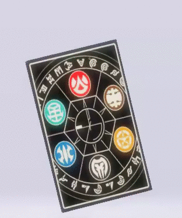
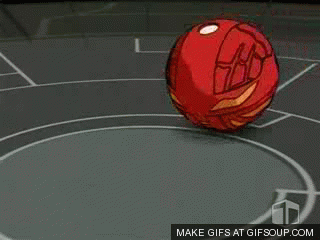

Gate Cards

- Gate cards are set up before the match begins.
- The area covered by the gatecards designate the playing area.
- A gate card can be activated at any time by the person who set it on the field.
- Properly leveraging gate cards can turn the tide during intense brawls.
- A gate card's effect is limited only to the Bakugan standing on it.
Bakugan Stand

- Players must throw their Bakugan so that they land on the gate cards.
- Positioning is important. Bakugan can only battle other bakugan on the same gate card.
- You may stand multiple bakugan on the same gate card. Their powers can then be added up together.
Ability Cards

- Ability cards are cards you can use at any time without having to set them beforehand.
- Ability cards have a wide range of effects and they're the most important aspect to deciding the outcome of a Bakugan brawl.
- Multiple ability cards can be used at the same time. Using 2 abilities simultaneously is called performing a double ability, and using 3 is a triple ability.